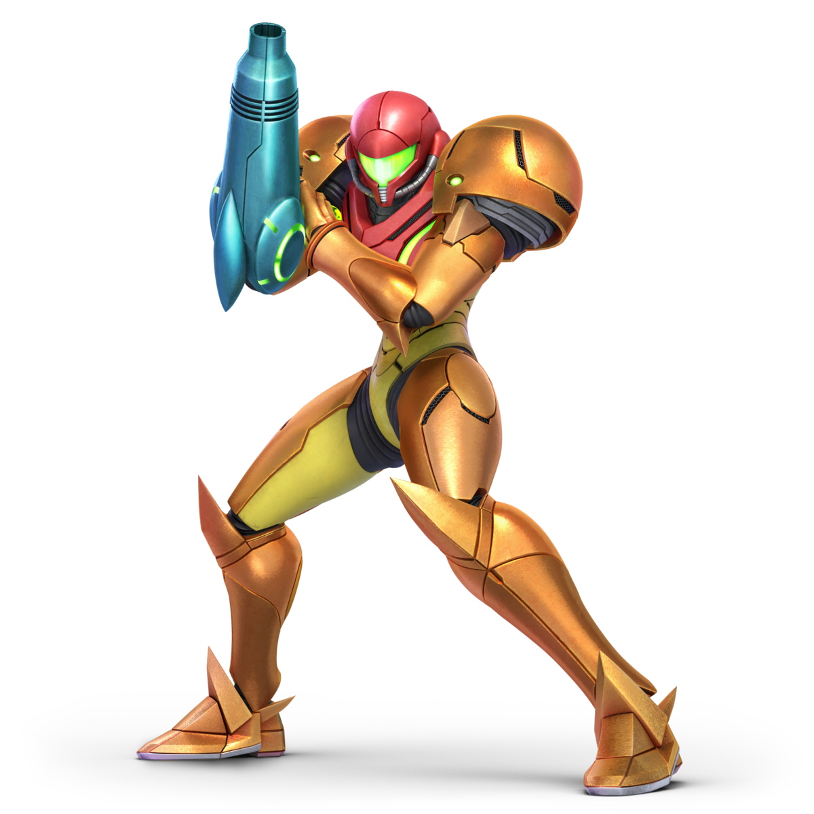
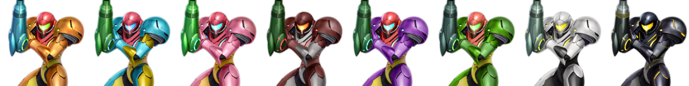

Samus Aran
Samus Aran (サムス・アラン Samusu Aran), es un personaje de videojuegos creado por Nintendo, protagonista de la saga de Metroid, siendo introducida en el primer videojuego de 1986. Samus se presenta como una exsoldado de la Federación Galáctica que se convirtió en una cazarrecompensas. Generalmente equipada con una armadura exoesqueleta, —denominada «Traje de Poder» (Power Suit en inglés)—, el cual está equipado con diferentes armas de energía, misiles u otro material de apoyo. A lo largo de la serie, realiza diversas misiones que la Federación Galáctica le encomienda mientras caza a los Piratas Espaciales y su líder Ridley, junto con los organismos parásitos que drenan la energía de los seres vivos llamados Metroids. Samus ha aparecido en todos los videojuegos de la saga, y en medios fuera de esta, como en la serie Super Smash Bros, y en la versión de cómic de Captain N: The Game Master. Es reconocida como una de las primeras protagonistas femeninas en la historia de los videojuegos y ha seguido siendo un personaje popular de Nintendo más de treinta años después de su primera aparición.

Samus Aran en SSBUPaleta de colores
